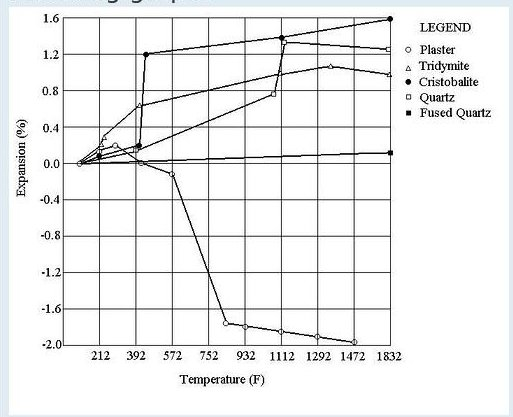

Muottimateriaalin teoriaa
Science Of Investments Redux
John Kurman
Allaoleva perustuu artikkeleihin Journal of Dental Research'issa.
Muina lähteinä on ollut Science Direct,in kautta tilatut tekniset paperit ja aineistoa
http://www.netzsch-thermal-analysis.com/ 'sta.
Olen muokannut näitä aineistoja graafeiksi jotka ovat ehkä helpompia omaksua
kuin kaikki tekninen ammattislangi.
Kaikkialla kirjallisuudessa perusmateriaalina on kipsi. Niin sen pitääkin olla. Kipsi eli kalsiumsulfaatti CaSO4 on perinteisten
muottien ensisijainen sideaine. Kipsi sanaa olen käyttänyt laajemmin, kun suppea käyttö tarkoittaa vain kalsiumsulfaatin hemihydraattia.
Monia vaihtoehtoisiakin materiaaleja on, alkaen magnesium ja fosfaattipohjaisista ja jatkuen piin, alumiinioksidin ja zirkoniin kolloidisiin muotoihin. Kaikki nämä kestävät kuumuutta ja useimmat ovat kemiallisesti reagoimattomia. Kaikki eivät kuitenkaan ole yhtä helposti saatavia, halpoja ja helposti purettavissa valun jälkeen kuin kipsi.
Kipsi kutistuu kuumennettaessa, siksi lisätään muita ainesosia - täyteaineita - jotka kompensoivat tätä kutistumista.
Eräs tällainen aine on piioksidi - kvarsihiekkana, savena, shamottina jne.
Hyvin tavallinen väärinkäsitys on että piioksidin, alumiinioksidin ym. tehtävänä olisi lisätä kuumuuden kestävyyttä.
Se ei pidä paikkaansa.
Aloitetaan kaikkien em tutkimusten isoisästä, julkaistu 1931 "Dental Casting Technic: Theory and Practice" ( Hammastekninen valu, teoria ja käytäntö) http://jdr.iadrjournals.org/cgi/reprint/11/5/681.pdf.
Tämä on hyvä artikkeli aloittaa. Se kuvaa kipsisidosteisten muottien käyttäytymistä, erityisesti lämpölaajenemista ja vesi/kiintoaineen suhdetta. Seuraava kaavio on tehty sen aineistosta.

kuva 1
212 F = 100C
752 F = 400 C
1472 F = 800 C
Artikkelin mukaan kipsi supistuu kuumennettaessa n. 2 %. Piioksidi laajenee kuumennettaessa. Kaikkki allotroppiset muodot ( aineet joilla on useampia kidemuotoja) piistä ( tridymiittim kristobaliitti, kvartsi, ja fuusattu piiokidi laajenevat. Kaikki nuo piioksidin muodot lasimaista paitsi amorfinen lasimainen piiokisdi läpikäyvät kiderakenteen muutoksen. Kvartsin rakennemuutos on tunnetuin,
sitä sanotaan keramiikassa kvartsin inversioksi 500-600 C alueella ja aiheuttaa nopean laajenemisen. Kristobaliitti läpikäy vielä jyrkemmän muutoksen alueetta 240-275. Piioksidin muutokset tapahtuvat kumpaankin suuntaan. Kipsin muutos on pysyvä.
Muuttamalla kipsin ja täyteaineen suhdetta voi siis helposti vaikuttaa muotin lämpökäyttäytymiseen.
Kuvassa alla on esimerkkejä muutamien seosten lämpölaajenemisesta.
 kuva 2
Seuraava dokumenti on ?Thermal Behavior of the Gypsum Binder in Dental Casting Investments?. Se on mielestäni väistämätön luettava.
http://jdr.iadrjournals.org/cgi/reprint/65/6/877.pdf.
Matkalla huoneenlämmöstä lasinsulatuksen kuumuuteen Kipsi eli kalsiumsulfaatti käy useiden muutosvaiheiden läpi jotka
aiheuttavat palatumatonta kutistumista.
Kosteuden poistuminen on kaksivaiheinen prosessi.
Huoneenlämmössä kipsi on Kalsiumsilfaattin dihydraatti CaSO4+2H2O.
Teoreettinen malli puhtaalle kipsille on että siinä on kalsiumsulfaatin molekyylien muodostamia tasoja joita sitoo löyhästi
vesimolekyylien kerros. Sidos on veden happi- ja vetyatomien välinen ja helposti katkeava.
Tällaista heikosti sidottua vettä sanotaan kidevedeksi. Kun kipsiä kuumennetaan, tämä vesi haihtuu ja kipsi muuttuu kalsiumsulfaatin hemihydraatiksi
CaSO4+½H2O. Kaksi sulfaattimolekyyliä jakaa yhteisen vesimolekyylin). Tämä veden poistumisen 1. vaihe päättyy 177C asteessa.
Lämmön noustessa loppukin vesi irtoaa, noin 200 C asteessa. Tämä on toinen vaihe.
Tämän linkin takaa löytyy kuva joka havainnollistaa edellä kerrotun.
http://www.netzsch-thermal-analysis.com/en/literatur/download/42/
Kuvassa on kaksi käyrää. Ensimmäinen näyttää lämpö/paino -profiilin TG ( tarkoittaa että samalla kun kuumensimme, myös punnitsimme.)
TG- käyrä kertoo kipsin käyttäytymisen lämmön seurauksena. Toinen käyrä on "Differentiaalinen skannava kalorimtri".
Yleinen harhakäsitys on että höyryn paine voi rikkoa muotin jos kaikkea vettä ei ole poistettu. Kestää aikansa kun kiinteä
muottimassa luovuttaa kaiken veden. Sinä aikana muotin lämpötila on lähellä veden kiehumispistettä, koska haihtuva veden haihtuminen sitoo lämpöä ja poistuva vesi vie mennessään kaiken lämmön. Totta jyllä jossakin vaiheessa muotin pintaosa alkaa kalsinoitua ja vesi ei haihdu kyllin nopeasti jäähdyttääksdeen. Mutta riippumatta siitä mikä on ilman lämpötila uunissa muottimassa pysyy kylmänä
niin kauan kuin siinä on vettä. Koska haihtuvan veden paine on sama kuin ilmanpaine, höyry ei voi rikkoa muottia.
Tämä ei tarkoita että voisi kuumentaa miten vaan. Kun ulkopinta kuivuu, se kutistuu ja tämä aiheuttaa pinnan suuntaisia halkeamia muottiin.
Kun muotin vesi on kokonaan poistunut Hemihydraatti on muuttunut anhydriitiksi Ca SO4+= h2O. Kipsin eri muodot eivät muunnu samalla hetkellä kun lämpötila nousee rajakohtaanb. Se on jatkuvampaa muutosta jossa jotain edellisestä vaiheesta jää pidempään.
Yllämainitussa artikkelissa Posnjak (1938) nimesi nuo kolme polymorfista anhydraatin muotoa alfa,beta, gamma.
Tämä nimeäminen voi kuitenkin aiheuttaa sekaannusta kun teillisuusm kutsuu alfaksi märkätekniikalla ja betaksi kuivatekniikalla
valmistettua kipsiä. Siitä syystä käytän mieluummin artikkelin kirjoittajan termistöä III-,II-, ja I-kalsiumsulfaatti.
Pieni sivupolku teollisuuteen: Alfa-kiposi valmistetaan perinteisesti märkämenetelmällä autoklaavissa paineen alaisena.
Beta-hemihydraatti valmistetaan kuumentamalla hienoksi jauhettua normaalipaineessa. Beta muodostaa karkeita, säröisiö hiukkasia
ja sen hyviä ominaisuuksia on muovattavuus, suuri puristuslujuus ja tiheys. Alfa muodostuu pienemmistä, säännöllisemmistä
ja järjestyneistä kiteistä. Alfa kovettuu kovemmaksi kuin beta ja tuottaa tarkkoja muotteja, joilla on suuri pintakovuus ja pienempi laajeneminen kovettuessa. Useimmat kaupalliset kipsit ovat näiden seoksia. "Potter's plaster ja rakennuskipsi sisältävät vain betaa.
Meillä mallikipsinä myytävät laadut kuten Supradur ovat alfapitoisia.
200C lämmössä kipsi on III_CaSO4 muodossa ja kasvavassa määrin hemihydraattina. III-CaSO4 on liukeneva anhydraatti, joka on metastabiili. Tämä tarkoittaa että se voi vielä muuttua takaisin hemihydraatiksi, jos sen ottaa uunissa ja antaa ilman imeä
ilman kosteutta. Väljästi artikkelia lainaten "tämä ilmiö on teollisuudelle tuttu. Juuri kalsinoitu (vedetön) kipsi imee nopeasti
ilmasta kosteutta ja lämpiää. Se tarvitsee paljon vettä sekoittuakseen ja ja jämähtää liian nopeasti. Sekoittumisominaisuuden
paranevat jos sen antaa kypsyä ilmassa (vanhentaminen). Toisinsanoen veden poistumisen jälkeen kipsimuotin voisi ottaa uunista,
panna vesiämpäriin ja sekoittaa siitä uuden kipsin. Tai mieluummin jauhaa sen, antaa vahheta huoneilmassa ja sitten sekoittaa
veteen ja valaa uuden muotin. Yämä siis teoriassa, käytännössä se ei kannata. Siksi sitä kutsutaan liukenevaksi anhydridiksi.
Kuumennettaessa edelleen suurin kutistuminen yapahtuu alueella 348-400C, jolloin tapahtuu lämpöä sitova reaktio.
Tällöin metastabiili III-CSO4 muuttuu stabiiliksi II-CaSO4'ksi, liukenemattomaksi anhydridiksi.
Kun kuumennusta jatketaan, kipsin suurin kutistuminen tapahtuu alueella 348-400 C, johon liittyy lämpöä sitova reaktio.
Siinä metastabiili III-CaSO4 muuttuu stabiiliksi II-CaSO4'ksi eli liukenemattomaksi anhydriitiksi.
Tämä on rakennemuutos jossa #III-Ca SO4'n neulamainen kidemuoto muuttuu lyhyemmiksi ja paksummiksi II- CaSO4 kiteiksi.neulasiksi.
Kun reaktiota on kokeellisesti yritetty kääntää on havaittu että reaktio on täysin palautumaton 800C asteessa.
"Tämäkin ilmiö on kipsiteollisuudelle tuttu. Kun kipsi on kuumennettu punahehkuun, se ei enää reagoi veden kanssa ja
on 'palanut kuolleeksi' ".
(toisaalla olen tutkinut olettamusta että juuri tämä konversioalue olisi erityisen herkkä kipsin halkeamisen kannalta.
Ajatus oli että kuumentaa voisi reippaammin jos tämä 'vaara-alue' vain ohitetaan hitaasti. Tällä alueella lämmön johtuminen pinnalta ytimeen on hitainta aiheittaen epätasaisen lämmön jakautumisen, jonka takia pinnasuuntaiset voimat
aiheuttaisivat helpommin halkeilua. En ole onnistunut toteen näyttämään olettamusta 'vaara-alueesta'. Sellaista ei löytynyt.
Jos ohitetaan lasin valun lämpötilat, II-CaSO4 muuttuu I-CaSO4'ksi 1227 lämpötilassa. Kipsin tiheys kasvaa hiukan ja kiteet sintrautuvat yhteen. Muuta tästä ei ole sanottavaa kuin että siinäkin lämmössä muotti kestää lasin valun eräin varauksin.
Onesitetty useita lämpötilan arvoja jossa kipsi kemiallisesti hajaantuu. Arvot vaihtelevat suuresti, alkaen 700 C niinkin korkealle kuin 1500 C. Erimielisyyden syyt ovat mielenkiintoisia.
Calsium sulfaatti hajoaa allakuvattujen reaktioden kautta:
CaSO4 ==> CaO + SO3
SO3 ==> S02 + ½O2
jossa CaSO4 on kalsiumsulfaatti eli kipsi
CaO on kalsiumoksidi eli kalkki (kestää 2572 C asti
SO3 on rikkitrioksidi ja
SO2 on rikkidioksidi.
Rikkidioksidi on voimakkaasti metalleja korrosioiva kaasu, joka muodostaa liukenemattoman sulfidikerroksen metallin pintaan.
Oikea hammasteknikoiden ja koruseppien painajainen. Lasia rikkidioksidi itse asiassa lujittaa, ja jättää pintaan 'kukintaa'
joka on helppo pestä pois. Se parantaa lasin kestävyyttää poistamalla emäksiä kuten natriumia lasista. Tämä ilmiö tunnettiin hyvin
aikana jolloin uuneja lämmitettiin puulla ja hiilellä.
Tämä 'de-alkalisoituminen' on ioninvaihtoreaktio, joka poistaa natriumin muuttamaklla sen natriumsulfaatiksi.
Kemiallinen tapahtuma on suunnilleen:
2Na (lasissa) + SO2 + ½O2 +H2= ==> 2H (lasissa) + Na2SO4
Toistetuissa ja tarkoissa laboratorio-olissa on voitu osoittaa että kalsiumsulfaatin
hajoaminen alkaa 1230 C ja on lähes päättynyt 1450 C. Kalsiumoksidin CaO ja -sulfaatin seos sulaa noin 1350 C, joten
kipsivalun turvalliseksi ylärajaksi voidaan sanoa 1230 C. Tämä on varsin reipas kuumuus, mutta ei todella realistinen.
Kipsimuotissa coisi valaa, mutta se kutistuu dramaattisesti. Jos mittatarkkuudella on merkitystä on käytettävä
laajenevaa täyteainetta kuten piioksidi.
Piin Si=2 lisääminen tuottaa toisenlaisen reaktion:
Ca SO4 + SiO2 ==> Ca SIo3 + SO3
SO3 ==> SO2 + ½O2
CaSIo3 on eräs kalsium silikaatin muoto, joka on hyvin kuumuutta kestävä, on lujaa ja käytetään paljon korkeiden kuumuuksien eristeenä. Kuitenkin kipsi/piioksidin hajoittamiseen tarvitaan vähemmän energiaa kuin puhtaan kipsin.
Seurauksena on hajoamisen alkaminen jo 990 C ja on täydellinen 1280 C.
Allaoleva kaavio kuvaa hajoamisen erilaisuutta
kuva 3
( kuva ja sen tietosisältö on artikkelista: G.M.Ingo et al, "Thermal and Microchemical Characterisations of CaSO4 - SiO2 Investment MAterials".
Varman päälle laskien, ja käyyttämällä hajoamisen alkukotaa ylärajana tullaan tulokseen että Kipsi/piioksimuotti
kestää 989 C lämmössä rajattomasti. Tämä on reilusti yli lasivalun tarpeen. Hiilellä on kuitenkin myös osuutensa.
kaikki orgaanisen aineen pois polttaminen muotissa jättää hiilijäämää muottiin.
Hiilen mukanaolo alentaa hajoamislämpöä entisestään, kuten on esitetty "Decomposition of Gypsum Investment in the Presence of Carbon"
URL: http://jdr.iadrjournals.org/cgi/reprint/38/3/541.pdf.
Hiilen mukanaolllessa kipsi/piioksidimuotissa tapahtuu seuraavat reaktiot:
CaSO4 +4C ==> CaS + 4CO
3 CaSO4 + CaS ==> 4CaO + 4SO2
CaO + SiO2 ==> CaSiO3
jossa CaS, kalsiumsulfidi toimii katalysaattorina aiheutten reaktioketjun joka muuttaa kalsiumsulfaatin kalsiumoksidiksi.
Hiili vaikuttaa liuottimena ja alentaa reaktion lämpötilaa.
Tämä reaktio on hyvin tunnettu ja sitä käytetään sementin valmistuksessa ja terästeollisuudessa.
Koksia ja kalkkikiveä käytetään silikaattien poistamiseen malmista ja tuloksena on kalsiumsilikaattikuonaa.
Tämä reaktio alkaa jo 700 C.
Hajoaminen on kuvattu allaolevassa graafissa.
kuva 2
Seuraava dokumenti on ?Thermal Behavior of the Gypsum Binder in Dental Casting Investments?. Se on mielestäni väistämätön luettava.
http://jdr.iadrjournals.org/cgi/reprint/65/6/877.pdf.
Matkalla huoneenlämmöstä lasinsulatuksen kuumuuteen Kipsi eli kalsiumsulfaatti käy useiden muutosvaiheiden läpi jotka
aiheuttavat palatumatonta kutistumista.
Kosteuden poistuminen on kaksivaiheinen prosessi.
Huoneenlämmössä kipsi on Kalsiumsilfaattin dihydraatti CaSO4+2H2O.
Teoreettinen malli puhtaalle kipsille on että siinä on kalsiumsulfaatin molekyylien muodostamia tasoja joita sitoo löyhästi
vesimolekyylien kerros. Sidos on veden happi- ja vetyatomien välinen ja helposti katkeava.
Tällaista heikosti sidottua vettä sanotaan kidevedeksi. Kun kipsiä kuumennetaan, tämä vesi haihtuu ja kipsi muuttuu kalsiumsulfaatin hemihydraatiksi
CaSO4+½H2O. Kaksi sulfaattimolekyyliä jakaa yhteisen vesimolekyylin). Tämä veden poistumisen 1. vaihe päättyy 177C asteessa.
Lämmön noustessa loppukin vesi irtoaa, noin 200 C asteessa. Tämä on toinen vaihe.
Tämän linkin takaa löytyy kuva joka havainnollistaa edellä kerrotun.
http://www.netzsch-thermal-analysis.com/en/literatur/download/42/
Kuvassa on kaksi käyrää. Ensimmäinen näyttää lämpö/paino -profiilin TG ( tarkoittaa että samalla kun kuumensimme, myös punnitsimme.)
TG- käyrä kertoo kipsin käyttäytymisen lämmön seurauksena. Toinen käyrä on "Differentiaalinen skannava kalorimtri".
Yleinen harhakäsitys on että höyryn paine voi rikkoa muotin jos kaikkea vettä ei ole poistettu. Kestää aikansa kun kiinteä
muottimassa luovuttaa kaiken veden. Sinä aikana muotin lämpötila on lähellä veden kiehumispistettä, koska haihtuva veden haihtuminen sitoo lämpöä ja poistuva vesi vie mennessään kaiken lämmön. Totta jyllä jossakin vaiheessa muotin pintaosa alkaa kalsinoitua ja vesi ei haihdu kyllin nopeasti jäähdyttääksdeen. Mutta riippumatta siitä mikä on ilman lämpötila uunissa muottimassa pysyy kylmänä
niin kauan kuin siinä on vettä. Koska haihtuvan veden paine on sama kuin ilmanpaine, höyry ei voi rikkoa muottia.
Tämä ei tarkoita että voisi kuumentaa miten vaan. Kun ulkopinta kuivuu, se kutistuu ja tämä aiheuttaa pinnan suuntaisia halkeamia muottiin.
Kun muotin vesi on kokonaan poistunut Hemihydraatti on muuttunut anhydriitiksi Ca SO4+= h2O. Kipsin eri muodot eivät muunnu samalla hetkellä kun lämpötila nousee rajakohtaanb. Se on jatkuvampaa muutosta jossa jotain edellisestä vaiheesta jää pidempään.
Yllämainitussa artikkelissa Posnjak (1938) nimesi nuo kolme polymorfista anhydraatin muotoa alfa,beta, gamma.
Tämä nimeäminen voi kuitenkin aiheuttaa sekaannusta kun teillisuusm kutsuu alfaksi märkätekniikalla ja betaksi kuivatekniikalla
valmistettua kipsiä. Siitä syystä käytän mieluummin artikkelin kirjoittajan termistöä III-,II-, ja I-kalsiumsulfaatti.
Pieni sivupolku teollisuuteen: Alfa-kiposi valmistetaan perinteisesti märkämenetelmällä autoklaavissa paineen alaisena.
Beta-hemihydraatti valmistetaan kuumentamalla hienoksi jauhettua normaalipaineessa. Beta muodostaa karkeita, säröisiö hiukkasia
ja sen hyviä ominaisuuksia on muovattavuus, suuri puristuslujuus ja tiheys. Alfa muodostuu pienemmistä, säännöllisemmistä
ja järjestyneistä kiteistä. Alfa kovettuu kovemmaksi kuin beta ja tuottaa tarkkoja muotteja, joilla on suuri pintakovuus ja pienempi laajeneminen kovettuessa. Useimmat kaupalliset kipsit ovat näiden seoksia. "Potter's plaster ja rakennuskipsi sisältävät vain betaa.
Meillä mallikipsinä myytävät laadut kuten Supradur ovat alfapitoisia.
200C lämmössä kipsi on III_CaSO4 muodossa ja kasvavassa määrin hemihydraattina. III-CaSO4 on liukeneva anhydraatti, joka on metastabiili. Tämä tarkoittaa että se voi vielä muuttua takaisin hemihydraatiksi, jos sen ottaa uunissa ja antaa ilman imeä
ilman kosteutta. Väljästi artikkelia lainaten "tämä ilmiö on teollisuudelle tuttu. Juuri kalsinoitu (vedetön) kipsi imee nopeasti
ilmasta kosteutta ja lämpiää. Se tarvitsee paljon vettä sekoittuakseen ja ja jämähtää liian nopeasti. Sekoittumisominaisuuden
paranevat jos sen antaa kypsyä ilmassa (vanhentaminen). Toisinsanoen veden poistumisen jälkeen kipsimuotin voisi ottaa uunista,
panna vesiämpäriin ja sekoittaa siitä uuden kipsin. Tai mieluummin jauhaa sen, antaa vahheta huoneilmassa ja sitten sekoittaa
veteen ja valaa uuden muotin. Yämä siis teoriassa, käytännössä se ei kannata. Siksi sitä kutsutaan liukenevaksi anhydridiksi.
Kuumennettaessa edelleen suurin kutistuminen yapahtuu alueella 348-400C, jolloin tapahtuu lämpöä sitova reaktio.
Tällöin metastabiili III-CSO4 muuttuu stabiiliksi II-CaSO4'ksi, liukenemattomaksi anhydridiksi.
Kun kuumennusta jatketaan, kipsin suurin kutistuminen tapahtuu alueella 348-400 C, johon liittyy lämpöä sitova reaktio.
Siinä metastabiili III-CaSO4 muuttuu stabiiliksi II-CaSO4'ksi eli liukenemattomaksi anhydriitiksi.
Tämä on rakennemuutos jossa #III-Ca SO4'n neulamainen kidemuoto muuttuu lyhyemmiksi ja paksummiksi II- CaSO4 kiteiksi.neulasiksi.
Kun reaktiota on kokeellisesti yritetty kääntää on havaittu että reaktio on täysin palautumaton 800C asteessa.
"Tämäkin ilmiö on kipsiteollisuudelle tuttu. Kun kipsi on kuumennettu punahehkuun, se ei enää reagoi veden kanssa ja
on 'palanut kuolleeksi' ".
(toisaalla olen tutkinut olettamusta että juuri tämä konversioalue olisi erityisen herkkä kipsin halkeamisen kannalta.
Ajatus oli että kuumentaa voisi reippaammin jos tämä 'vaara-alue' vain ohitetaan hitaasti. Tällä alueella lämmön johtuminen pinnalta ytimeen on hitainta aiheittaen epätasaisen lämmön jakautumisen, jonka takia pinnasuuntaiset voimat
aiheuttaisivat helpommin halkeilua. En ole onnistunut toteen näyttämään olettamusta 'vaara-alueesta'. Sellaista ei löytynyt.
Jos ohitetaan lasin valun lämpötilat, II-CaSO4 muuttuu I-CaSO4'ksi 1227 lämpötilassa. Kipsin tiheys kasvaa hiukan ja kiteet sintrautuvat yhteen. Muuta tästä ei ole sanottavaa kuin että siinäkin lämmössä muotti kestää lasin valun eräin varauksin.
Onesitetty useita lämpötilan arvoja jossa kipsi kemiallisesti hajaantuu. Arvot vaihtelevat suuresti, alkaen 700 C niinkin korkealle kuin 1500 C. Erimielisyyden syyt ovat mielenkiintoisia.
Calsium sulfaatti hajoaa allakuvattujen reaktioden kautta:
CaSO4 ==> CaO + SO3
SO3 ==> S02 + ½O2
jossa CaSO4 on kalsiumsulfaatti eli kipsi
CaO on kalsiumoksidi eli kalkki (kestää 2572 C asti
SO3 on rikkitrioksidi ja
SO2 on rikkidioksidi.
Rikkidioksidi on voimakkaasti metalleja korrosioiva kaasu, joka muodostaa liukenemattoman sulfidikerroksen metallin pintaan.
Oikea hammasteknikoiden ja koruseppien painajainen. Lasia rikkidioksidi itse asiassa lujittaa, ja jättää pintaan 'kukintaa'
joka on helppo pestä pois. Se parantaa lasin kestävyyttää poistamalla emäksiä kuten natriumia lasista. Tämä ilmiö tunnettiin hyvin
aikana jolloin uuneja lämmitettiin puulla ja hiilellä.
Tämä 'de-alkalisoituminen' on ioninvaihtoreaktio, joka poistaa natriumin muuttamaklla sen natriumsulfaatiksi.
Kemiallinen tapahtuma on suunnilleen:
2Na (lasissa) + SO2 + ½O2 +H2= ==> 2H (lasissa) + Na2SO4
Toistetuissa ja tarkoissa laboratorio-olissa on voitu osoittaa että kalsiumsulfaatin
hajoaminen alkaa 1230 C ja on lähes päättynyt 1450 C. Kalsiumoksidin CaO ja -sulfaatin seos sulaa noin 1350 C, joten
kipsivalun turvalliseksi ylärajaksi voidaan sanoa 1230 C. Tämä on varsin reipas kuumuus, mutta ei todella realistinen.
Kipsimuotissa coisi valaa, mutta se kutistuu dramaattisesti. Jos mittatarkkuudella on merkitystä on käytettävä
laajenevaa täyteainetta kuten piioksidi.
Piin Si=2 lisääminen tuottaa toisenlaisen reaktion:
Ca SO4 + SiO2 ==> Ca SIo3 + SO3
SO3 ==> SO2 + ½O2
CaSIo3 on eräs kalsium silikaatin muoto, joka on hyvin kuumuutta kestävä, on lujaa ja käytetään paljon korkeiden kuumuuksien eristeenä. Kuitenkin kipsi/piioksidin hajoittamiseen tarvitaan vähemmän energiaa kuin puhtaan kipsin.
Seurauksena on hajoamisen alkaminen jo 990 C ja on täydellinen 1280 C.
Allaoleva kaavio kuvaa hajoamisen erilaisuutta
kuva 3
( kuva ja sen tietosisältö on artikkelista: G.M.Ingo et al, "Thermal and Microchemical Characterisations of CaSO4 - SiO2 Investment MAterials".
Varman päälle laskien, ja käyyttämällä hajoamisen alkukotaa ylärajana tullaan tulokseen että Kipsi/piioksimuotti
kestää 989 C lämmössä rajattomasti. Tämä on reilusti yli lasivalun tarpeen. Hiilellä on kuitenkin myös osuutensa.
kaikki orgaanisen aineen pois polttaminen muotissa jättää hiilijäämää muottiin.
Hiilen mukanaolo alentaa hajoamislämpöä entisestään, kuten on esitetty "Decomposition of Gypsum Investment in the Presence of Carbon"
URL: http://jdr.iadrjournals.org/cgi/reprint/38/3/541.pdf.
Hiilen mukanaolllessa kipsi/piioksidimuotissa tapahtuu seuraavat reaktiot:
CaSO4 +4C ==> CaS + 4CO
3 CaSO4 + CaS ==> 4CaO + 4SO2
CaO + SiO2 ==> CaSiO3
jossa CaS, kalsiumsulfidi toimii katalysaattorina aiheutten reaktioketjun joka muuttaa kalsiumsulfaatin kalsiumoksidiksi.
Hiili vaikuttaa liuottimena ja alentaa reaktion lämpötilaa.
Tämä reaktio on hyvin tunnettu ja sitä käytetään sementin valmistuksessa ja terästeollisuudessa.
Koksia ja kalkkikiveä käytetään silikaattien poistamiseen malmista ja tuloksena on kalsiumsilikaattikuonaa.
Tämä reaktio alkaa jo 700 C.
Hajoaminen on kuvattu allaolevassa graafissa.
Kuva 4
Onko tämä hajoaminen pahasta lasin valajalle? Rakenteellisen lujuuden kannalta vaikutus on olematon.
Kipsin kaikki rakenteellinen lujuus on menetetty jo veden poistumisen myötä.
Muotti on aivan yhtä kuumuutta kestävä kuinjos se olisi pelkkä kipsi/piioksidi seos.
Kalsiumsilikaatti on tärkeä ainesosa kuumuutta kestävissä laasteissa ja metallivalun muottiseoksissa.
Muotin lämpölaajeneminen, lämpövaraus ja ja lämmön johtamiskyky ovay kuitenkin muuttuneet koska
ainesosat ovat muuttuneet. Muutosten voimakkuudelle en ole onnistunut saamaan vahvistusta.
Jos jotkut muotin osat säilyvät muuttumattomina, syntyy lämpörasitusta joka on pahempi kuin omogeenisessa muotissa.
Mikäli hillen mukaantulo voidaan välttää, se on suositeltavaa. Kuitenkin kipsi(piioksidimutotit ovat paljon odotettua kestävämpiä.
Oikein tehtynä ja käsiteltynä ne kestävät kuumuutta oletettua enemmän ja pidempään.
Vielä veden ja kiintoaineen suhteesta. Ralph Carter RAnsom & Randolph'in kemisti on esittänyt tutkielman joka löytyy osoitteesta:
http://www.ransom-randolph.com/Effect_of_Changing_Water_Powder_Ratio_on_JI.pdf
Veden ja kiintoaineen suhde saattaa olla kriittisin tekijä muotin teossa . tai sitten ei.
Veden ja kiintoaineen suhteen muuttaminen varmasti muuttaa muotin lämmön johtamiskykyä.
Samoin se muuttaa laajenemisen kulkua. Käytetyt veden ja kiintoaineen suhteet vaihtelevat 0.28 (28 osaa vettä sataan osaan kiintoainetta) ja 0.50 ( yksi osa vettä ja kaksi kiintoainetta) välillä.
Vedsimäärän alarajalla seos on liian jäykkää kopioidakseen muoodon tarkasti. Jos vettä on enemmän kuin yläraja
muotti voi olla liian heikko kestämään kuumennusta. Veden ja kiintoaineen suhde vaikuttaa myös muotoin huokoisuuteen.
Huokoisuus ilmaistaan prosentteina ja määritellään punnitsemalla kuiva muotti. Muotti punnitaan kun se on kovettunut huoneenlämmössä ja uudelleen kun vesi on poistettu kuumentamalla. Painoero ilmaisee muotin huokoisuuden.
Saattaa olla yllätys että huokoisuus on tyypillisesti 60% luokkaa!
Tässä on kuva:
Kuva 5
Neulamaiset kiteet ovat kipsiä, möykyt piioksidia ja kaikki musta on tyhjää. Täynnä vettä kun kipsi on kovettunut ja ilmaa kun vesi on kuumennettu pois. Kieltämättä hjuokoista. Huokoisuus vaikuttaa lämpökäyttäytymiseen. Huokosiempi kipsu eristää enemmän.
Toisaalta huokoiset rajoittavat halkeamien etenemistä. Aukkopaikat pysäyttä'vät jhalkeamista , samalla tavoin kun jos lasinsärön päähän porataan reikä.
Ehkä paras esitys veden/kuiva-aineen suhteesta on Carterin artikkelin kuva 8.
Tämä kuva luettelee eri sekoitusten "poltetun" kesstävyyden.
termit "raaka" ja "poltettu"kestävyys on lainattu keramiikasta, eivätkä ne ole kovin hyviä.
Keraaminen materiaali on lujempaa poltetuna. Kipsi on lujinta kovettumisen jälkeen - kun se on vielä
"raakaa". Kuviosta näkyy että puristuslujuus laskee jyrkasti 0.34 suhteen (34 osaa vettä 100 osaa kuiva-ainetta, eli noin 1 osa vetta kolmeen osaan kuiva-ainetta. Tämä ei tarkoita että 1:3 olisi paras, ainoastaan että Carterin testeissä
se osoitti suurinta puristuslujuutta veden poiston ja jäähdytyksen jälkeen.
Voidaan päätellä että muottiaineella on sama puristuslujuus uunissa loppuhaudutuksessa.
Ilman kokeita se on on kuitenkin vain poäätelmä.
Eräs seikka joka kiinnitti huomiotani Carterin artikkelissa oli muotin vikojen vähäisyys vesi/kuiva-aineen suhteesta riippumatta.
Carter otaksui että se johtuu R&R seoksen sietokyvystä. Vahvistaakseen tämän hän toisti testin
"ei-laatumerkin" seoksella (oletettavasti jonkin kilpailijan. Muotit kestivät "useimmiten" )Carterin tapa vähätellä että
"ei-laatumerkki" käyttäytyi yhtä hyvin.
Tulokset eivät ole aivan yksiselitteisiä. Näyttää siltä että vesi/kuiva-ainee suhteella on ajateltua vähemmän merkitystä,
ja merkistä riippumatta seokset ovat varsin sietokykyisiä tässä syhteessa. Toivoisin enemmän testejä asiasta.
Tietenkään puristuslujuus ei kerro kovin paljoa. Meitä kiinnosta enemmän aineen vetolujuus. Useimmilla aineilla on vetolujuus
ja puristuslujuus eivät ole samanarvoisia etenkään kipsillä. Puristuslujuus on vain helpommin ja luotettavammin mitattavissa ja siksi
meidän täytyy tyytyä tähän, mutta muistaa sen rajoitettu soveltuvuus. Ajatellan esimerkiksi että halutaan laskea millaisen
hydrostaattisen paineen alaiseksi muotti joutuu. Oletetaan että poltetun muottimme puristuslujuus on 50 psi. Se ei ole paljon.
Paljonko lasia voidaan pinota ennenkuin muotti hajoaa. Kaava on yksinkertaisesti tiheys * paino * korkeus.
Ominaispainossa tuheys ja paino on jo yhdistetty eli meille jää ominaispaino * korkeus.
Veden ominaispaino on 1 gr/cm#. Soda-kalkkilasin ominaispaino on tyypillisesti 2.5. 20 cm korkea valu aiheuttaa 0.72 psi paineen muotin pohjalle. Vasta 14 metrin korkuinen sula lasipylväs musertaisi kipsin!. Puristuslujuus ei kerta kaikkiaan ole sovelias mitta
muottien kestävyyden arviointiin. Entä vetolujuus. Siitä on erilaisa tuloksia, vaihdellen 1/6'sta 1/15 osaan puristuslujuudesta.
Tulos kuitenkin riippuu seinämän paksuudesta ja joustavuudesta. On ehkä helpompi laskea muotin seinämiin kohdistuva kuorma.
Oletetaan 25 kilon lasimäärä kuution muotoisessa muotissa (alkutekstin arvot ovat tuuma-järjestelmässä ja sisältävät
pyöristyksia. Tässä olen muuntanut ne metrisiksi joka lisää pyöristysvirheitä. LL)
Tuo kuutio on noin 20 senttiä sivultaan. Pystysuora paine pohjaa vasten on helppo laskea, mutta sivuttaispaine on mutkikkaampi.
Paine on kuitenkin sama kaikkiin suuntiin mutta ensimmäiseen senttiin vaikuttaa vain matala korkeus, kun pohjalla koko korkeus
on mukana laskuissa. Onneksi kaava on helppo: keskipainen on ominaispaino * korkeus/2. Tulos on suunnilleen 3 kiloa/cm2.
Ei ole paljon. Otaksun että vetolujuus kasvaa suorassa suhteessa paksuuteen ( tämä on vain otaksuma) ja vetolujuus olisi
huonoimman arvon mukaan 1/15 puristuslujuudesta. Silloin muotin paksuudeksi riittäisi n 4 cm kestämään alareunaan tuleva paine.
Minulla on epäilys että teemme muoteista tarpeettoman paksuja.
On tunnettuja tapoja lisätä vahvikkeita. Metallisia vahcistuksia kuten rautalankaa, verkkoa, kanaverkkoa ym on käytetty.
Henkilökohtaisesti en ole havainnut niiden sanottavasti auttavan. Metallit pehmenevät ja hapettuvat nopeasti uunin kuumuudessa.
Kuumuutta kestävien aineiden kuten mulliitti, perliitti jne. ei myöskään mielestäni tuo mitään lisää muotin lujuuteen.
Mulliitti tosin tuottaa pitkiä kideneilasia, mutta vasta 1000C yläpuolella. Ainoat materiaalit jotka lisäävät vetolujuutta ovat lasikuitu ja keraaminen kuitu. LAsikuitu pli jo muinaisille egyptiläisille tuttu keino. He käyttivät sitä keraamisten astioiden
lujittamiseen. Nykyaikainen lasikuitu juontaa 1830-luvun Ranskasta. Sen käyttö on keksitty uudelleen ja uudelleen ja sitä on käytetty
kipsielementtien lujittamiseen ainakin 1960-1970 luvulta saakka. Lasikuitu on painoonsa nähden noin 6 kertaa lujempaa kuin
teräslanka. lasikuituvahvisteisen kipsin yleinen käyttä rakennusteollisuudessa on tehnyt tunnetuksi sen ominaisuudet.
Tavalliseen kipsiseokseen verrattuna uunnattoman lujuutensa takia lasikuitukipsistä voidaan tehdä hyvin ohuita rakenteita.
Ei tarvitsisi upottaa muotteja hiekkaan tai metallisiiin astiouhun lisävahvisytuksen saamiseksi.
Kipsiseosten lämmönjohtokyky on huono. Kuiva hiekka on vielä kertaluokkaa huonompi lämmönjohtaja.
En näe mitään tarvetta hidastaa lämmönjohtoumista hautaamalla muotteja hiekkaan - ellei tarve ole tunnepohjainen mukavuus halkeamia pelkäävillä.
Lauri Levanto: Jälkikirjoitus.
Eräs muottitutkimuksen klassikko on CD-ROM " Mixing with the best". Valitettavasti tekijänoikeusriitojen takia sitä on saatavana vain
piraattikopioina. Siinä väheksytään lasikuidun merkitystä toteamalla että se sulaa muun lasin kanssa yhtaikaa ja menettää
kaiken vetolujuutensa. Kuitenkin on monia hyvia esimerkkejä erittäin ohuista lasikuitukangas/kipsi -muoteista.
Myöhemmmässä kirjeenvaihdossa Kurmanin kanssa päädyimme olettamukseen että sulakin lasikuitu toisaalta joustavana pysäyttää
halkeamia ja mahdollisesti myös tahmeana vaikuttaa liiman tavoin.
Lähde: Kurman